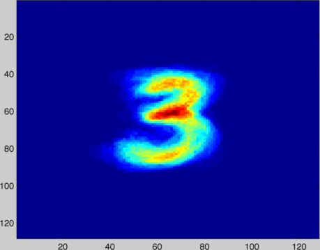
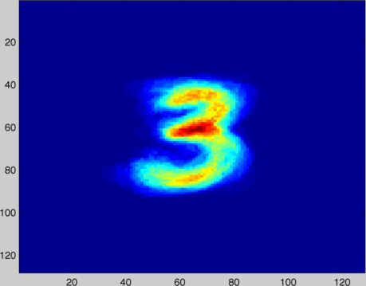
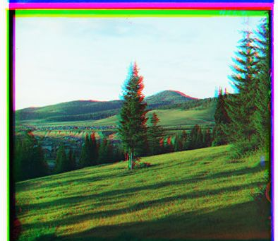
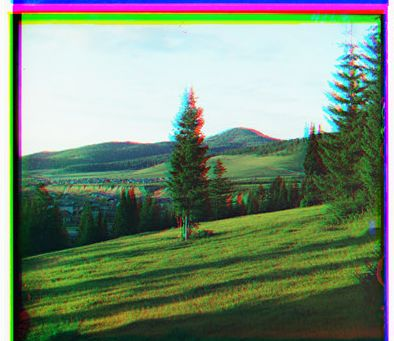

Vision side-project demonstrations and downloads
Congealing: joint alignment of images. Until I do
a full write-up, check out the readme
and the before/after comparison displaying the mean image of handwritten
3s. The congealed images are much more coherent.

Registration by Maximization of Mutual Information:
creation of color photographs from the Prokudin-Gorsky photographic plates
by registration and color channel mapping. Please look at the
readme and the
examples below until I do a full write-up.
 

The portrait of the man was correctly registered. The tree on the hill was
incorrectly registered because the algorithm was run with an excessive
number of bins.
Café Wall:
a geometric optical illusion that makes parallel lines appear crooked.

View the interactive demonstration
or
read the source.